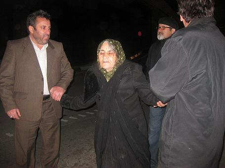

پذيرش > اخبار > سرانجام، شهلا جاهد هم قربانی دیگر خشونت اعدام شد


 سرانجام، شهلا جاهد هم قربانی دیگر خشونت اعدام شد سرانجام، شهلا جاهد هم قربانی دیگر خشونت اعدام شد
10 آذر 1389 - - نسخه قابل چاپ
تغییربرای برابری- شهلا جاهد، متهم به قتل لاله سحرخیزان، همسر فوتباليست سابق ايران،
بامداد چهارشنبه در زندان اوين اعدام شد.

عکس: مادر شهلا
اجرای حکم شهلا جاهد در حالی انجام شد که سازمان عفو بین الملل خواستار توقف حکم اعدام وی شده بود و بسیاری از سازمان ها و مدافعان حقوق بشر خواستار لغو حکم اعدام در ایران را بارها مطرح کرده اند. به گزارش نشریه جامعه شناسی ایران، طبق آمار رسمی، ایران در زمینه اعدام شهروندان خود در مقام دوم ، بعد از کشور چین، قرار دارد. حال آنکه با توجه به نسبت جمعیت دو کشور چین و ایران به تعداد موارد اعدام شده ، عملا ایران رتبه اول را دارد. بدین معنا حتی امار اعدام در ایران شش برابر بیشتر از آمار چین است.
درحالی که گزارش دبيرکل سازمان ملل وضعيت حقوق بشر در ايران را نگران کننده ارزیابی کرده است محمدجواد لاريجانی، دبير ستاد حقوق بشر قوه قضاييه گفته است: قوانين ما مسلح به حقوق بشر است و بيش از ۵۰ درصد موارد اعدام، قصاص است و قصاص حق خصوصی به شمار میرود.
هرچند ایشان به موارد کمتر از 50 درصد اشاره ای نکرد اما با همین حق خصوصی شهلا جاهد امروز صبح اعدام شد. عبدالصمد خرمشاهی وکيل شهلا جاهد در گفت وگو با ايرنا گفته است: «حکم اعدام جاهد پس از گذشت حدود هشت سال و در پی تاييد ديوان عالی کشور و موافقت رييس قوه قضاييه، ساعت پنج صبح روز چهارشنبه در محوطه داخلی زندان اوين اجرا شد.»
به گزارش خبرگزاری دانشجویان ایران، عبدالصمد خرمشاهی پس از اجرای حکم اعدام شهلا جاهد در جمع خبرنگارانی که در محوطهی بيرونی زندان اوين حضور داشتند، گفت: « مسوولانی که از دستگاه قضايی در مراسم اجرای حکم حضور يافته بودند تمام تلاش خود را برای اخذ رضايت از اولياء دم به کار گرفتند اما متاسفانه نتيجه بخش نبود. به گفته او شهلا در لحظات آخر با التماس و گريه از خانواده لاله سحرخيزان میخواست که از قصاص او گذشت کند.
بنا به گزارش های خبری، از ساعات ابتدايي امروز چهارشنبه ، بستگان شهلا ، جمعي از خبرنگاران، جمعي از فعالان حقوق زن و هنرمندان در محوطه بيروني بازداشتگاه اوين حضور داشتند و همچنان به کسب رضایت از اولیای دم امیدوار بودند. ساعت 5 نمايندهاي از دستگاه قضايي به اوين مراجعه كرد و به حضار اطمينان داد كه براي برقراري سازش در پرونده تمام تلاش خود را صرف خواهد كرد. سپس خودروي ويژه بررسي صحنه جرم، حامل پزشك كشيك قانوني و يك دستگاه آمبولانس وارد اوين شدند، شهلا جاهد از قرنطينه خارج شد تا براي اجراي حكم آماده شود.براساس گفتههاي برخي از شاهدان مراسم اجرا، شهلا پيش از حضور پاي چوبه دار نماز خواند و به دعا پرداخت و در پاسخ به داديار اجراي احكام كه از او خواسته بود اگر حرفي دارد بگويد، اظهار كرد كه حرفي براي گفتن ندارد و اگر حرفي بوده طي اين سالها ميگفته است.
به گزارش ایسنا، ساعت 5:25 اولياي دم لاله سحرخيزان (مقتول) متشكل از مادر و دو برادر مقتول به همراه ناصر محمدخاني كه به وكالت از دو فرزند خود در مراسم حضور يافته بود، سوار بر يك دستگاه خودروي پرشياي سفيدرنگ قصد ورود به اوين را داشتند كه در اين لحظه مادر، برادر، خواهر و ساير بستگان شهلا جلوي خودرو را گرفتند و با التماس از آنها خواستند كه رضايت بدهند اما پس از چند دقيقه خودرو به داخل زندان رفت. و از اين ساعت به بعد، بستگان شهلا شروع به گريه و دعا كردند و ساير حضار نيز منتظر شنيدن خبري مبني بر اجرا يا اعلام رضايت ماندند که رضایت حاصل نشد.
عبدالصمد خرمشاهی، وکیل شهلا جاهد، پس از اعدام وی درگفت وگو با کمپین بین المللی حقوق بشر در ایران گفت: « اصلا باورم نمی شود.حالم خوب نیست. شهلا فقط گریه می کرد هیچ حرفی نزد. رفتم جلو و بهش گفتم حرف بزن اما فقط گریه می کرد. خانواده مقتول تا آخرین لحظه رضایت ندادند. هر کسی که آنجا بود خواست تا آنها گذشت کنند اما متاسفانه نپذیرفتند. ناصر محمدخانی هم بود و هیچ نگفت.»
یکی از مادرانی که برای کسب رضایت از خانواده شهلا در برابر اوین حاضر شده بود می گوید: «خانواده شهلا جاهد از ساعت دوازده شب در برابر اوین بودند. مادر پیر وخواهراش و برادر او و همسایه ها وفامیلهایش آنجا بودند. ساعت 4 خبرنگاران و وفعالان زنان آمدند.
ساعت 5 صبح پلیس با اسکورت خانواده سحر خیزان را به زندان برد این رفتار استثنایی بود در موارد دیگر اولیای دم خودشان از درب کوچک از میان مردم رد می شدند و اجازه ورود ماشین محمد خانی به داخل اوین واقعا بی سابقه بود. تمام تلفنهای وکلا و قوه قضاییه قطع شد و سزبازان با چشمهای گریان بیرون آمدند. خرمشاهی گفت شهلا جاهد هیچ نگفت و آرام بالای چوبه دار رفت. مادر لاله قصاص تقاضا کرد و محمد خانی هم تایید کرد. هر چه وکلا تقاضای بخشش کردند آنها نپذیرفتند.برادر لاله صندلی را از زیر پای شهلا جاهد کشید
خبرنگاران تقاضای حضور در داخل زندان را داشتند مسیول روابط عمومی قوه قضاییه نپذیرفت.»
ا
خدیجه مقدم از فعالان حقوق زنان می گوید: متاسفانه همیشه قبل از ماه محرم سرعت اجرای احکام اعدام بیشتر می شود چون در محرم و صفر حکم اعدام اجرا نمی شود. آذر ماه سه سال پیش، راحله زمانی را با اینکه دوبچه ی کوچک داشت اعدام کردند. حتی ما حکم توقف اعدام را از آقای شاهرودی به مدت یکماه گرفته بودیم تا شبهات پرونده برطرف بشود اما هنوز 15 روز به اجرای حکم اش مانده، اعدام شد. شهلا جاهد از زندان به ما خبر داد که راحله را برای اجرای حکم اعدام به قرنطینه برده اند و حالا نیست که از ما بخواهد برای رهایی راحله های دیگر از اعدام تلاش کنیم.
ارسال به
بالاترین
،
توییتر
،
فریندفید
،
فیسبوک
در همين بخش :
 پروین ذبیحی برنده جایزه حقوق بشری سازمان غيردولتى اتريشى سودويند شد پروین ذبیحی برنده جایزه حقوق بشری سازمان غيردولتى اتريشى سودويند شد
پخش کارت پستال و بروشور در روز جهانی زن در تهران
تمدید زمان برای امضای بیانیهی جمعی از فعالان زن به مناسبت هشت مارس
مجوزی که در نطفه خفه شد
بیش از 2000 امضا در اعتراض به تبعیض های آموزشی به مجلس تحویل داده شد
ديگر بخش ها :
طرح یک میلیون امضا
|
مقالات
|
سایت نوشته ها
|
اخبار
|
گزارش كمپين
|
گفت و گو
|
علیه سکوت
|
كوچه به كوچه
|
نامه های شما
|
گزارش ویژه
|
گفتگو با اعضا
|
ویژه سالگرد کمپین
|
تصویر برابری
|
دل آرام علی
|
تریبون
|
مقالات
|
تاریخ شفاهی
|
خارج از چارچوب
|
کتابخانه
|
درباره کمپین
|
کمپین در شهرها
|
کمپین در بند
|
صدای تغییر
|
ویژه 22 خرداد
|
لایحه حمایت از خانواده
|
گالری
|
عشا مومنی
|
امیر یعقوبعلی
|
خدیجه مقدم
|
راحله عسگری زاده و نسیم خسروی
|
پروین اردلان،جلوه جواهری، مریم حسین خواه، ناهید کشاورز
|
زینب پیغمبرزاده
|
سعیده امین، سارا ایمانیان، محبوبه حسین زاده، ناهید کشاورز و همایون نامی
|
احترام شادفر
|
نسیم سرابندی زاده،فاطمه دهدشتی
|
وبلاگ مهمان
|
پرونده خرم آباد
|
دستگیری ها
|
مریم مالک
|
پرستو اللهیاری
|
مهرنوش اعتمادی
|
سمیه رشیدی
|
Other Languages
|
همراهان
|
«فراخوان کمپین ده روز با بهاره هدایت»
| English
|